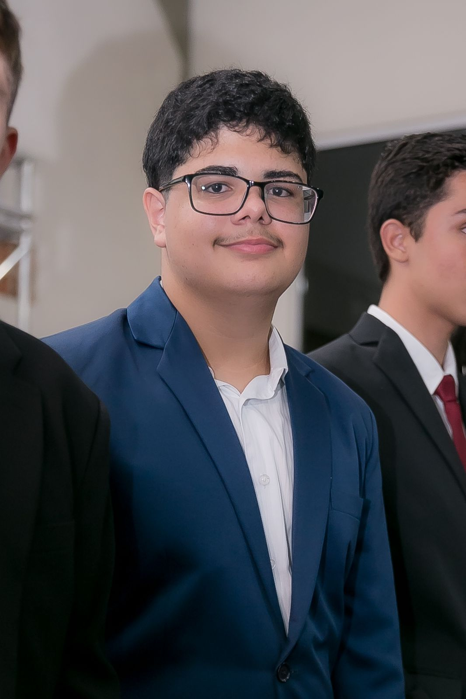

<<<<<<< HEAD
=======
Bem-vindo ao meu site!
Nesse site você vai ver
- >Sobre mim
- Gostos e Hobbies
- Meu objetivo com o curso
Sobre mim
Olá, meu nome é Carlos Eduardo Galvão, tenho 16 anos, e sou um aluno do curso de Design e
Criação de Sites para Web.
Estou no segundo ano do ensino médio.
Gostos e Hobbies
Eu sou uma pessoa que gosta de ler, jogar jogos mais casuais, ver filmes e séries, principalmente de
suspense ou terror.
Vôlei
Sou uma pessoa que acompanho vôlei a cerca de 3 anos, e torço para o Minas. Comecei a acompanhar quando comecei a treinar, hoje não jogo mais, mas ainda acompanho e torço muito.
Meu objetivo com o curso
Com esse curso tenho o objetivo de aprender a criar sites, e ser uma porta de entrada para aprender mais sobre computação.

>>>>>>> 8fb064b199ec848ff6ca56865fd8b356e563e452
Sobre mim
Olá, meu nome é Carlos Eduardo Galvão
Tenho 16 anos
Sou um aluno do curso de Design e Criação de Sites para Web.
Estou no segundo ano do ensino médio.
Gostos e Hobbies
Gostos e Hobbies!
- Leitura.
- Jogar jogos mais casuais.
- Ver filmes e séries.
- Cozinhar.
Vôlei
Sou uma pessoa que acompanho vôlei a cerca de 3 anos, e torço para o Minas.
Comecei a acompanhar quando comecei a treinar, hoje não jogo mais, mas ainda acompanho e torço muito.
Meus objetivos pessoais
- Passar em um vestibular.
- Aprender a criar sites.
- Melhorar na cozinha.
- Terminar Trono de Vidro.
Meu objetivo com o curso
Com esse curso tenho o objetivo de aprender a criar sites, e ser uma porta de entrada para aprender mais
sobre
computação.
<<<<<<< HEAD
=======